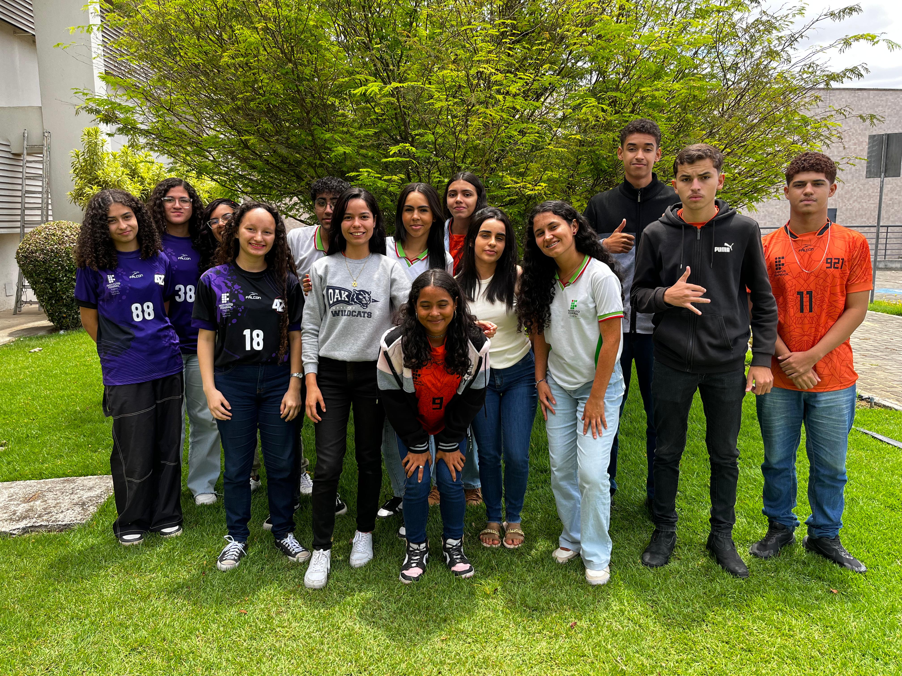

ECOLOGIA
A aula abordou o tema Ecologia e marcou o último encontro do projeto de ensino.
Inicialmente foi informado que seria o encerramento das atividades. Em seguida, foi
apresentado o tópico da aula e questionado aos alunos se já haviam tido aulas sobre ecologia,
com o objetivo de compreender o conhecimento prévio da turma

1. Apresentação Teórica
Após o levantamento inicial, foi informado que um vídeo seria exibido para introduzir os
conceitos básicos de Ecologia. A partir disso, foi ministrado os seguintes tópicos com o
auxílio de slides e mapas mentais extraídos do site Nerd Curso:
● Cadeia Alimentar: Foram discutidos os níveis tróficos e as relações de transferência
de energia nos ecossistemas.
● Relações Ecológicas: Abordagem sobre interações harmônicas e desarmônicas entre
os seres vivos.
● Problemas Ambientais: Exemplos de impactos ambientais, como derramamento de óleo e
desmatamento.
● Biomas Brasileiros: Características principais dos biomas nacionais, destacando a
biodiversidade e os desafios de preservação.
2. Atividades Lúdicas
Para reforçar o conteúdo e promover a interação dos alunos, foram realizados dois jogos
didáticos:
2.1. Bingo Ecológico
● A turma foi dividida em dois grandes grupos.
● Cada cartela do bingo continha 6 números os quais equivalem a perguntas
relacionadas aos tópicos apresentados anteriormente.
● A atividade foi conduzida de forma dinâmica, estimulando a participação de todos os
alunos e favorecendo a consolidação do conteúdo.
2.2. Dinâmica “Quem Sou Eu”
● A turma permaneceu dividida em dois grupos.
● Cada rodada consistia em dar duas pistas para cada pergunta relacionada às
características de seres vivos/biomas ou conceitos ecológicos.
● O objetivo era que os alunos acertassem a identidade de um ser vivo/biomas ou
conceito com base nas pistas fornecidas, promovendo a reflexão crítica e o trabalho
em equipe
3. Intervalo
Entre as atividades lúdicas, foi reservado um momento para o lanche, garantindo a
descontração e o fortalecimento do vínculo entre os participantes.
Conclusão
A aula proporcionou uma experiência rica e diversificada, unindo teoria, prática e dinâmicas
lúdicas para explorar os conceitos de Ecologia, vale destacar que a participação ativa dos
alunos nos jogos indicou um bom entendimento do conteúdo abordado e contribuiu para o
desenvolvimento de habilidades como colaboração e raciocínio lógico. Além de revisar o
conteúdo, o encontro promoveu o engajamento dos alunos e marcou de forma positiva o
encerramento do projeto de ensino